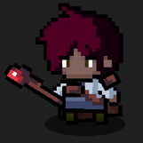

Hey! I'm Nate Decatur.
This is My Portfolio, showcasing my skills and projects.
@Nathan-Decatur on LinkedIn and @nated712 on Github.
This is My Portfolio, showcasing my skills and projects.
@Nathan-Decatur on LinkedIn and @nated712 on Github.
I recently graduated from UNCC with a B.S. in Computer Science, concentrating in AI, Robotics, and Game Design, along with a minor in Criminal Justice. As an early entry graduate student, I completed graduate-level coursework and earned credits applicable toward a Master’s degree, which strengthened my advanced understanding of the field.
My passion for computer science centers on creating technology that is useful and accessible to everyone. I am particularly passionate about AI ethics and ensuring that intelligent systems are developed responsibly and fairly. Through my coursework and projects, I’ve gained experience in programming, machine learning, agile methodology, and game development.
My minor in Criminal Justice has given me a strong understanding of the ethical and legal considerations involved in developing new technology. I’m committed to building software that respects these values and helps people.
Outside of tech, I enjoy making music, playing guitar, and gaming—activities that inspire my creativity and help me stay grounded.
I’m eager to grow my skills and contribute to a team.
Here are some of my technical and professional skills.
Here are my recent projects.
Utilized Naive Bayes and Logistic Regression models to determine the sentiment behind posts on social media. Contains data processing, feature extraction, and visualizations using Jupyter Developed in Python using Scikit-learn, NumPy, Matplotlib, SciPy and Pandas
3D FPS shooter developed in C# using Unity. Features a responsive, momentum-based movement system rewarding high-speed gameplay. Players must reach the end of the level while taking out enemies to restore their constantly draining health. Players receive a rank based on their time taken to beat the level.
2D Roguelike game developed in C# using Unity featuring a randomly-generating map, multiple weapons with several upgrades and a level-up system. Players can charge spells, earn highscores, and fight several unique enemies and a boss who become more difficult over time.